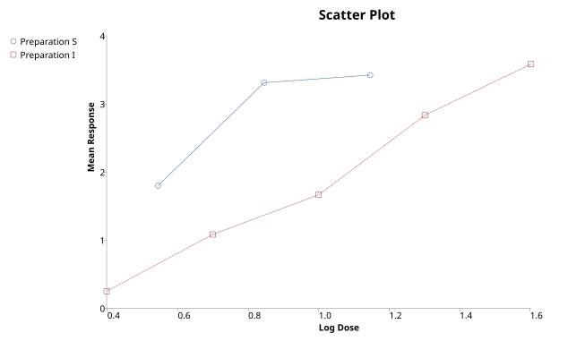

Scatter (and Line) Plot
Menu location: Graphics_Scatter.
This function plots a single Y axis (ordinate) variable or series against an X axis (abscissa) variable or series. The scale selection for the axes is automatic. Each series is plotted using different marker style and you can opt to display joining lines between the markers.

There is a scatter plot (text-based) for single Y vs. X character based plots.
Example
Test workbook (Graphics worksheet: PImax (cm H2O), Subject's Age (years)).
Consider the maximal static inspiratory pressure (PImax, in cm of water) and the age of 25 patients with cystic fibrosis (Altman, 1991). A scatter plot is the first thing to draw when asking how two measurements are related.
To draw this plot in StatsDirect open the test workbook using the file open function of the file menu. Then select Scatter from the Graphics menu. Enter 1 as the number of series to plot, then select the column marked "PImax (cm H2O)" when prompted for the Y axis data and the column marked "Subject's Age (years)" when prompted for the X axis data.
For this example the plot has 25 points, two of which coincide (8 years, 95 cm H2O): age from 7 to 23 years; PImax from 40 to 150 cm H2O. Each point is an open circle, the chart is titled "Scatter plot" and the axes take the titles of the columns.
The plot shows PImax rising with age, but with much scatter about that trend: patients of the same age differ by up to 75 cm H2O (at 23 years), and the two lowest pressures (40 and 45 cm H2O) belong to patients of 19 and 11 years, not to the youngest. A relationship this loose is worth seeing before it is summarised as a correlation coefficient or a regression line.
This R code reproduces the illustration above. It needs no packages and was checked with R 4.6.1. Paste it into R, or save it as a script and run it.
# Scatter plot: the StatsDirect help illustration (PImax, the maximal static
# inspiratory pressure, against age in 25 patients with cystic fibrosis, Altman 1991;
# the test workbook's Graphics worksheet columns "PImax (cm H2O)" and "Subject's Age
# (years)") in R
pimax <- c(80, 85, 110, 95, 95, 100, 45, 95, 130, 75, 80, 70, 80, 100, 120, 110, 125,
75, 100, 40, 75, 110, 150, 75, 95)
age <- c(7, 7, 8, 8, 8, 9, 11, 12, 12, 13, 13, 14, 14, 15, 16, 17, 17, 17, 17, 19, 19,
20, 23, 23, 23)
# StatsDirect draws one open circle for each row of the two columns, scales both axes
# to the data, titles the axes with the column titles and the chart "Scatter plot".
# A row with a missing value in either column is left out, as plot() leaves out a
# pair that holds an NA. R's default marker (pch = 1) is the same open circle.
plot(age, pimax, xlab = "Subject's Age (years)", ylab = "PImax (cm H2O)",
main = "Scatter plot")
# What the plot shows, in words
cat("Scatter plot of PImax (cm H2O) against Subject's Age (years):", length(age),
"points\n")
cat("Age from", min(age), "to", max(age), "years; PImax from", min(pimax), "to",
max(pimax), "cm H2O\n")
# StatsDirect's option to join the markers with lines (the Line plot) first sorts the
# points by X, so the segments run left to right whatever the row order; in R sort
# the rows the same way before asking for lines with type = "b":
# o <- order(age, -pimax)
# plot(age[o], pimax[o], type = "b", xlab = "Subject's Age (years)",
# ylab = "PImax (cm H2O)", main = "Line plot")
# A further series goes on the same axes with points(), given a different marker
# (pch) and a legend, as StatsDirect does when more than one series is plotted.